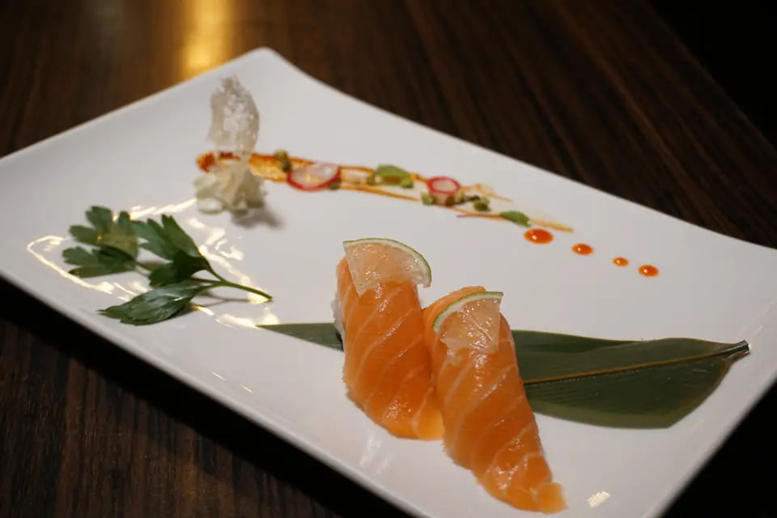
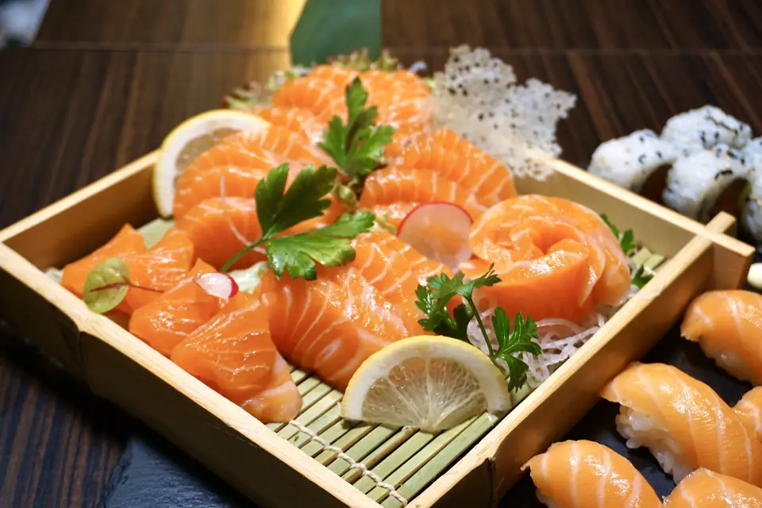
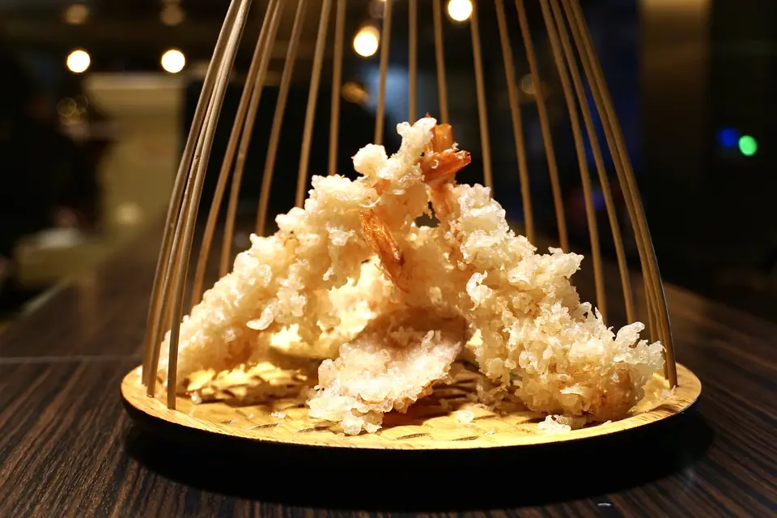
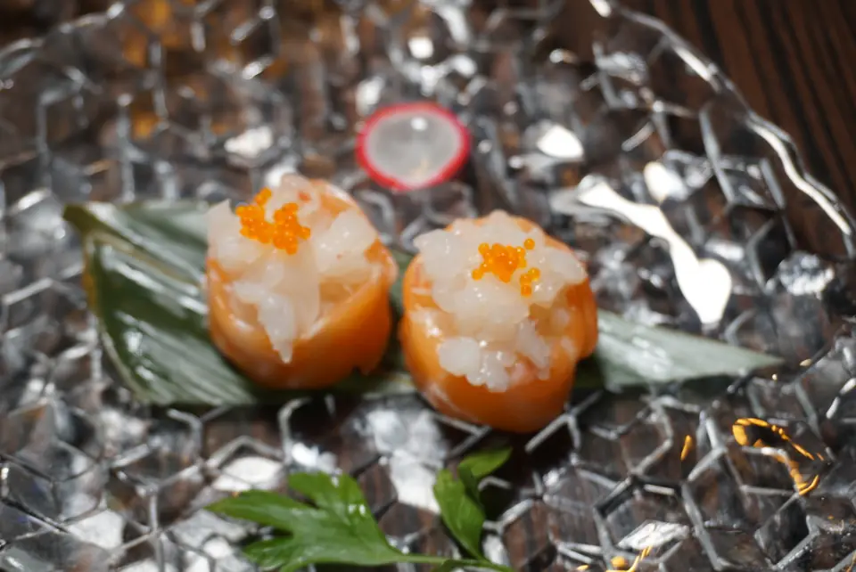
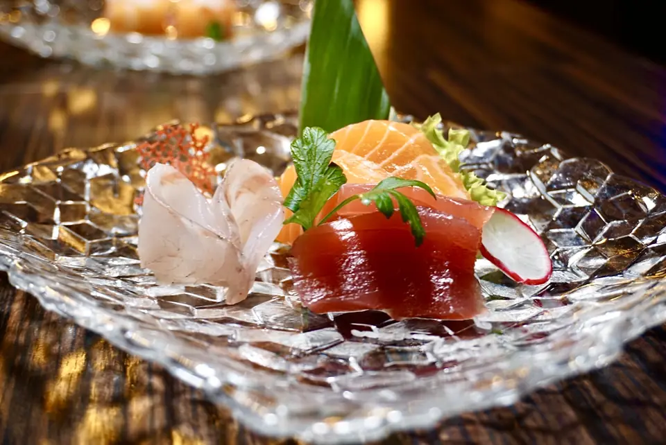
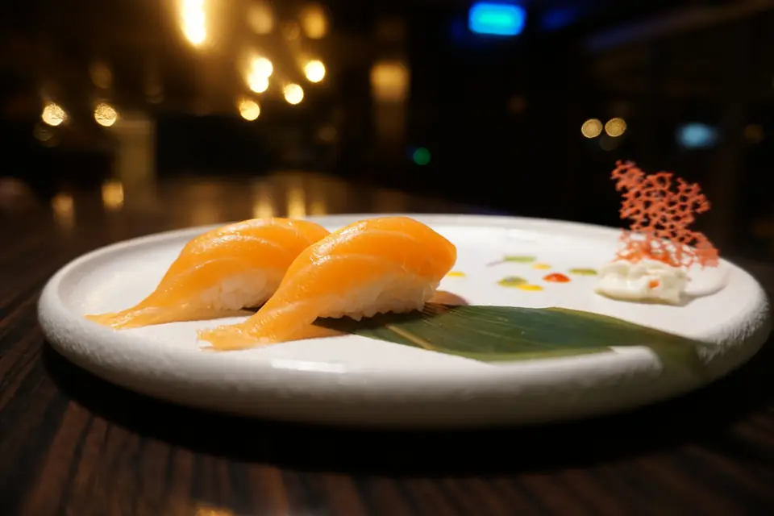

Vimercate · Cernusco · Saronno
Non il solito sushi delivery.
Sushi, crudi e cucina fusion preparati al momento. A domicilio o da asporto, in tre ristoranti a nord di Milano.
I ristoranti
Tre indirizzi, una cucina.
Dal menu
Fatto al momento, pezzo per pezzo.







Chi siamo
Mumi è prima di tutto un’esperienza fusion per il palato. Tutto parte dalle materie prime: piatti giapponesi e cinesi, dal sushi ai fritti, preparati nel rispetto delle ricette tradizionali e con ingredienti di prima scelta. Non un semplice sushi delivery, ma il delivery fusion d’eccellenza.
Come ordinare
Come ti piace mangiare?
- 01
A domicilio
Scegli il ristorante più vicino, inserisci l’indirizzo: arriva a casa caldo e appena preparato.
- 02
Da asporto
Ordina online e passa a ritirare all’orario che preferisci, senza fare la fila.
- 03
Con l’app
Riordina i tuoi piatti in un tocco, segui l’ordine e accumula punti fedeltà.
L’app
Mumi, in tasca.
Un’unica app per tutti e tre i ristoranti: ordini più veloci, offerte riservate e punti fedeltà.